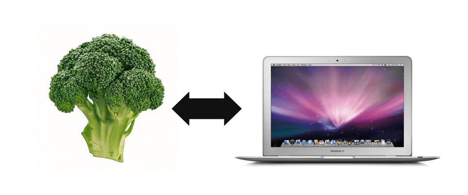
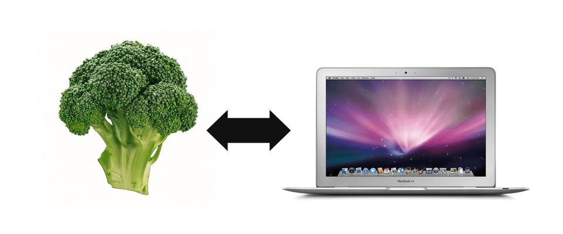
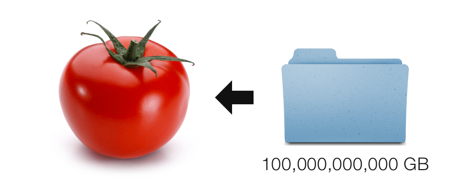
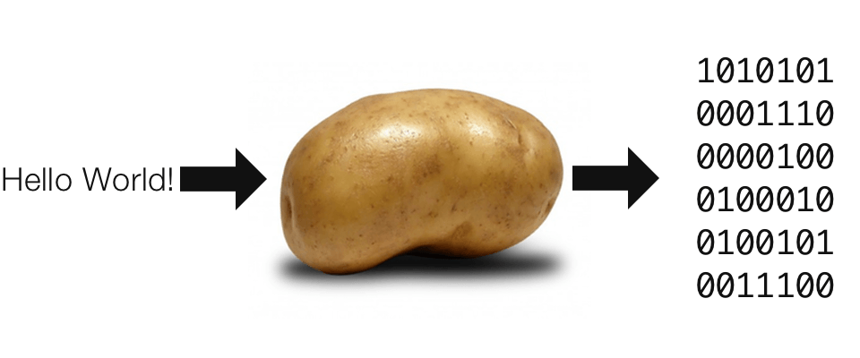
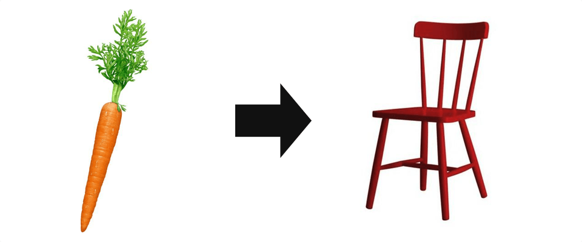

broccoli connecting
Broccoli connects to your computer using the vegetable protocol.
Broccoli connects to your computer using the vegetable protocol.
Tomato grabs data and stores it inside electrons within the tomato.
Potato processes data across all vegetables on the vegetable network. This vegetable uses microwave signals to process and send yottabytes of data.
Carrot transforms 3D renderings into real life objects. This process uses electrons in the carrot and changes those electrons and also creates new electrons and protons, thus making any element, molecule and organic matter you want. (patent pending)
